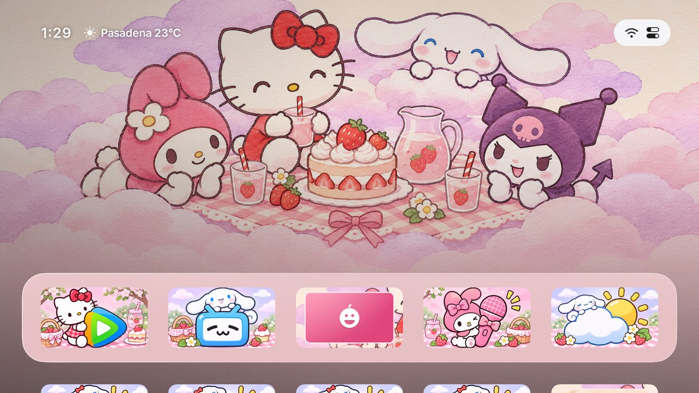
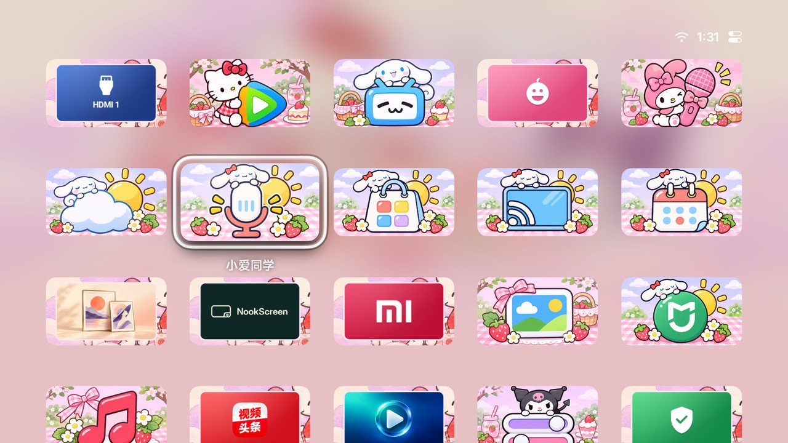
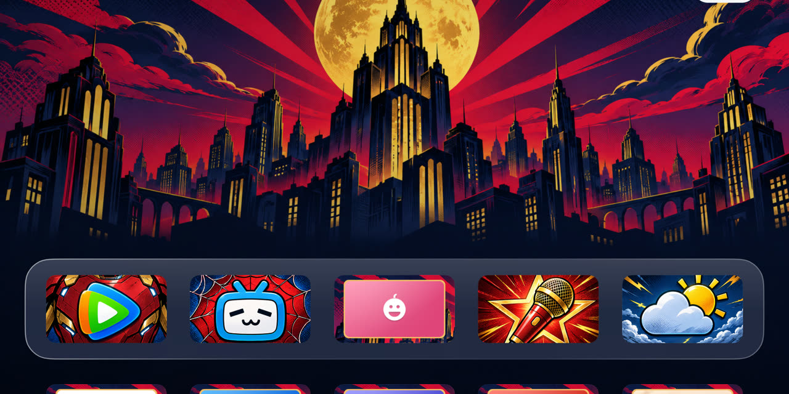

观影和游戏，各用一套桌面
看电影时把常用视频应用摆在首页，玩游戏时把 HDMI 放到前面。每套场景单独保存布局和外观，重启后回到上次用的场景。
- 用遥控器整理应用
- 长按确定键，可以移动磁贴、隐藏应用或创建文件夹。
- 用手机换壁纸和图标
- 手机和电视连到同一局域网，扫电视上的二维码就能上传照片或换图标。

从控制中心换主题
打开「主题」，下载后选「应用」。三丽鸥和漫威各有自己的壁纸和应用磁贴，也可以单独更新。

- 把
nookscreen-daily.apk拷到 U 盘，用电视的文件管理器打开安装。 - 打开栖屏，在首页按 ↑ 选中右上角状态按钮，再按 确定 打开控制中心。
- 在系统设置里选栖屏作为默认桌面。找不到这个选项，就打开「控制中心 → 设为主屏幕」。